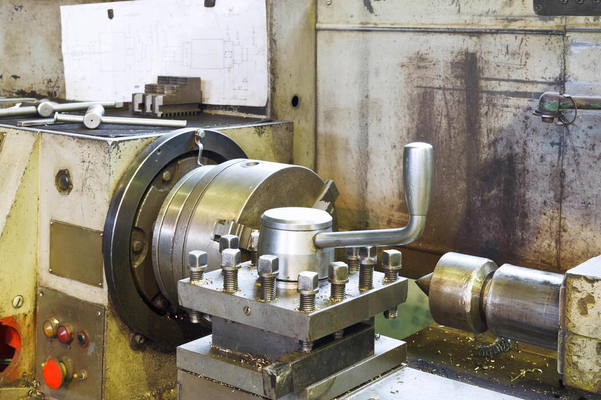

Sellado perfecto y precisión micrométrica para válvulas industriales.
El lapeado de asientos es un proceso crítico para garantizar la estanqueidad total en válvulas industriales. En Tecno Compresión SAS aplicamos técnicas controladas que aseguran un contacto uniforme y libre de fugas.

Contacto total entre asiento y obturador.
Eliminación de microcanales y defectos.
Funcionamiento seguro bajo presión.
Nuestro proceso de lapeado garantiza resultados confiables.
Contáctanos